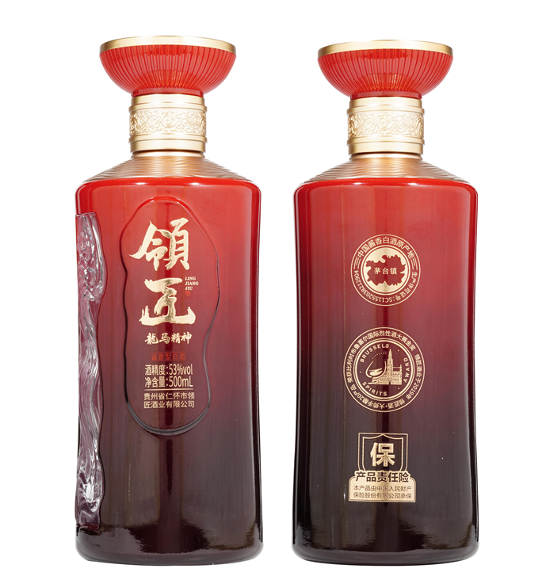
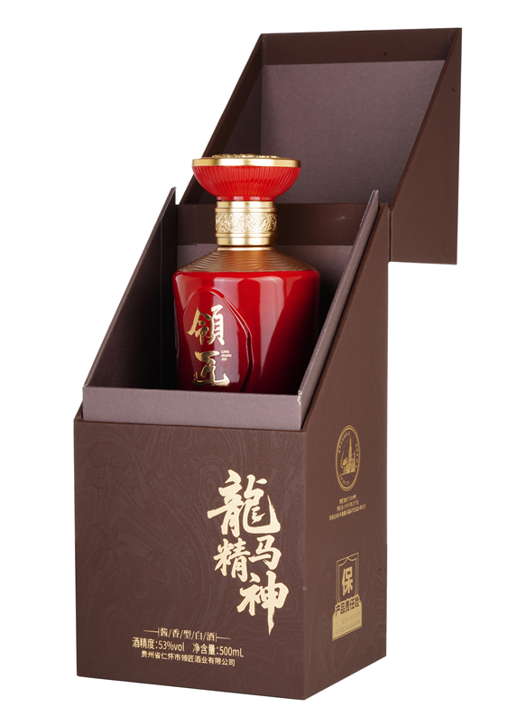

心怀高远
以开拓的视野看见远方。
有格局，也有求索的勇气。
LING JIANG · LONGMA JINGSHEN
领匠酒 · 龙马精神
以龙的视野谋局，以马的实干前行。
一瓶酱香，敬始终向前的你。
01 / 东方精神
龙马精神，不只是对顺遂的期盼。
更是在变化之中，依然昂扬向上的姿态。
以开拓的视野看见远方。
有格局，也有求索的勇气。
以踏实的行动走好当下。
有定力，也有向前的坚持。
敬每一位直面起伏，不曾停下脚步的奋斗者。
02 / 器物有言
殷红与鎏金之间，
是东方器物的分寸与风骨。
纹路蜿蜒，光影流转。把产地的山河，融入掌中的器物。
金色纹饰衔接红色瓶身，实物手持之间，看见瓶器的比例与分寸。
由红入深的色泽，与通透浮雕相映，让瓶身层次在光线中显现。

卷草龙纹环绕瓶颈，层次阶梯式瓶头呼应持续攀登的姿态。以器物的向上之势，寄托高远之志。
瓶身流动浮雕取意赤水河，纹路蜿蜒，兼具防滑实用性与流动之美。把孕育酱香的产地山河，融入一握之间。
结合人体工程学反复调整瓶身弧度，让独立瓶器的辨识度与握持体验相得益彰。
03 / 酒体之醇
以酱酒酿造功底，打磨一杯优质坤沙酱香。
从观色、闻香，到入口、落喉与回味，
对品饮体验的用心，落在每一个细节。
04 / 礼有分寸
深棕肌理，龙马暗纹，烫金题字。
让沉稳雅致的东方审美，
成为相聚时的一份郑重。

05 / 独立礼盒
龙马精神独立四珍礼盒
从山川风物，到一份有温度的礼。
黄精、枸杞、灵芝、人参，各有山川相伴，共成一盒心意。
01 / 黔山深处
层峦与薄雾之间，以黄精寄托山野的朴实。
02 / 贺兰山中
以枸杞的红，呼应贺兰山的辽阔，将热忱收进礼中。
03 / 黔山苗岭
以灵芝与苗岭林色相映，把对自然的珍视，化作相赠的诚意。
04 / 长白山脉
以人参与长白山脉相联，让一份郑重，承载长久的惦念。
山川与四珍配图为 AI 创作意境插画，非采摘地实拍；礼盒内容以实物为准。
四珍入盒 · 心意成礼
米白为底，龙纹为意。打开礼盒，让来自山川的心意一一呈现。
本礼盒独立配置。人参、灵芝、黄精、枸杞不属于龙马精神酒的配料，不参与酒体酿造。具体礼赠组合以实际提供为准。
LONGMA JINGSHEN
领匠酒 · 龙马精神
回看产品信息 ↑